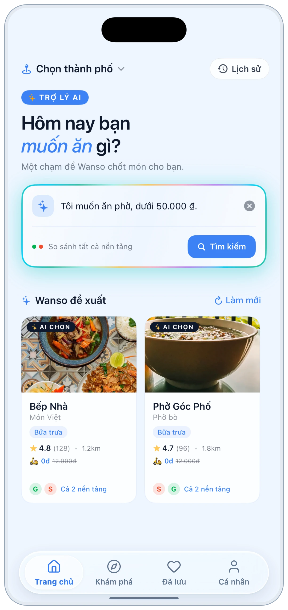

技术理解扎实
有模型部署、推理优化与 Agent 开发经历，能和研发一起判断效果、响应速度与实现成本。
岚图汽车 · Agent 开发实习
在固定测试条件下，解码速度从 48.72 提升到 96.35 tokens/s。
个人优势
技术训练让我理解实现边界；产品实践让我持续追问：用户真正需要的是什么，交付结果怎样才算有效。
有模型部署、推理优化与 Agent 开发经历，能和研发一起判断效果、响应速度与实现成本。
在固定测试条件下，解码速度从 48.72 提升到 96.35 tokens/s。
主导 Wanso 的竞品分析、需求、原型与内测，把“外卖比价”收敛成先选餐、再选平台的完整体验。
三轮内测，用户满意度从 72% 提升到 88%。
愿意听用户怎么选、哪里卡住，也能把问题讲成开发可以实现、测试可以复现的要求，持续跟进交付。
与安卓开发和内测用户共同迭代，参与双端联调与异常用例回归。
既做面向消费者的选餐助手，也做面向企业的 AI 工作平台，关注真实任务是否完成、结果能否检查与继续使用。
从 Wanso 的预算校验，到 ONENTRA 的数据溯源和可编辑文档交付。
项目作品
从一顿午餐的选择，到一份经营报告的交付。每个案例都讲清问题、判断、验证与结果。

移动应用 桌面网页
桌面网页
产品思考与文档
从问题定义到验收口径，完整记录两个项目的需求、方案取舍与复盘。可以按目录阅读，也可以独立打开、分享或打印。
关于我
我喜欢体验和研究不同领域的产品，弄清楚一个设计为什么这样做、使用起来又有什么感受。也喜欢和不同背景的人交流，听到自己原本想不到的视角。
遇到新问题，我愿意先动手尝试，再把发现带回团队讨论。希望把对技术的兴趣和对人的好奇，放进长期的产品工作里。
目前正在寻找 AI 产品经理实习机会，可立即到岗，实习 6 个月以上。
参与模型选型、推理优化与业务评测，把效果、延迟和资源成本放在一起比较。也因此更理解产品需求背后的工程取舍。
查看对应能力 ↑在技术研究之外持续做产品实践，把需求、设计与可运行的成果连接起来。
建立算法与工程基础；本科专业排名 1 / 40，雅思 7.5。
怎样让一个有预算、有忌口的人，在午休时决定吃什么、去哪点？我将选餐与平台比价拆成两个连续决策。
将模型、技能与业务资料放进一个工作入口，让任务从提出需求走到可核对、可编辑的结果。
很高兴认识你
我是王稼瑞，一个乐观、爱体验，也喜欢和人交流的人。这个网站记录了我的项目、判断和还在探索的问题，希望你看完后，能更了解我一点。
如果你也对某个产品、技术或生活中的小设计感兴趣，我们可以从那里聊起。不必有一个正式的议题，一次有趣的交流就很好。